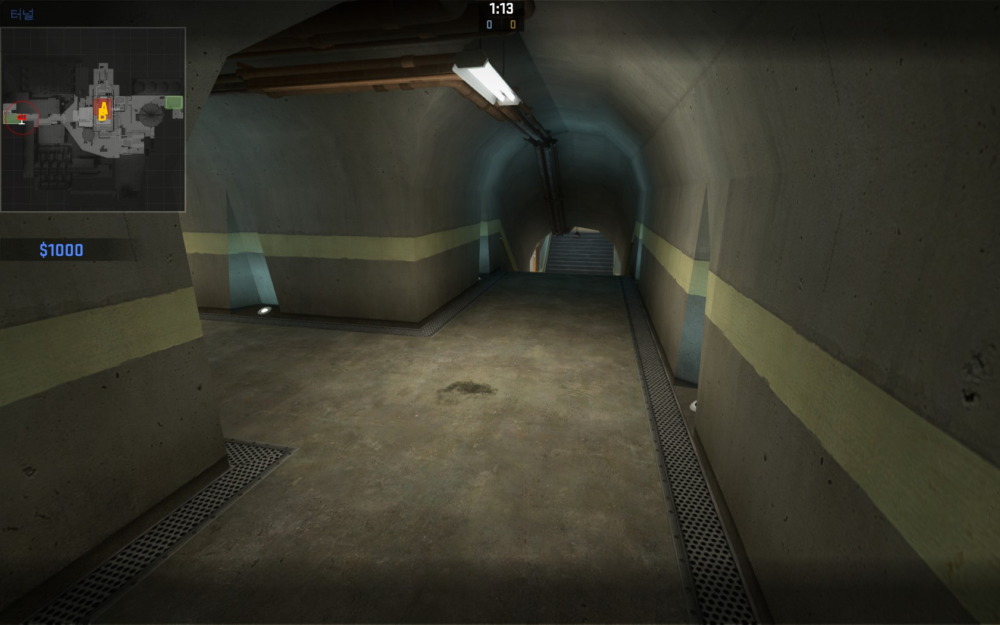

이 맵은 테러리스트(이하 테러)가 대태러부대(이하 시티)보다 불리한 맵입니다. 그래도 겨우 겨우 선택권을 줄 수 있는 곳 이죠.

시크릿에서 내려오면 이런 곳이 보이는데, 여기를 언더라고 합니다.
왼쪽으로 꺾으면 바로 A로 갈수 있는 환풍구가, 직진을 하면 B로 갑니다.여기서 오른쪽에 있는 쪽방에서 시티 대부분은 폭탄이 설치 될 때 까지 대기를 할겁니다.
그러면 우리는 여유롭게 문에다가 총을 쏩씨다!
여기의 명칭은 블루 컨테이너 혹은 로비라고 합니다.
왼쪽은 B로 갈수 있고, 앞이랑 안 보이지만 오른쪽은 A로 갈 수 있습니다.사진에서 왼쪽은 야드로 가는길, 오른쪽은 로비로 가는 길입니다.
밑은, 바로 B로 가는 길입니다.
설치지점 A입니다. 여기는 환풍구, 야드, 로비에서 막 들어 올수 있어서 막기 힘들다고 생각하지만,
시티는 이미 2층을 확보 해놨기 때문에 테러는 섣불리 들어 갈수 없습니다.